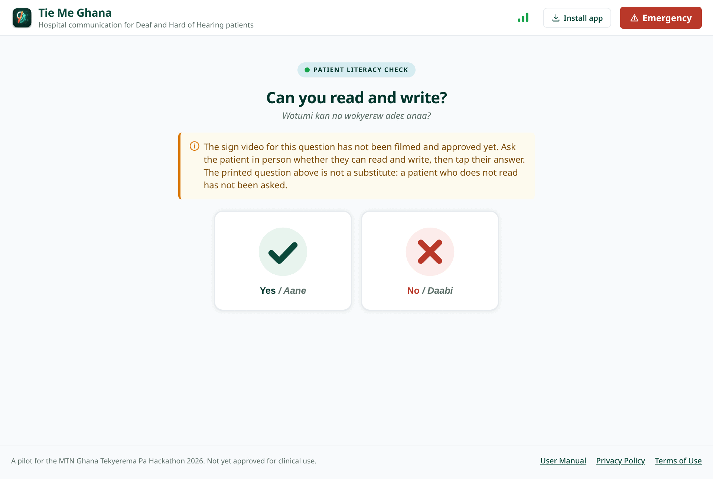
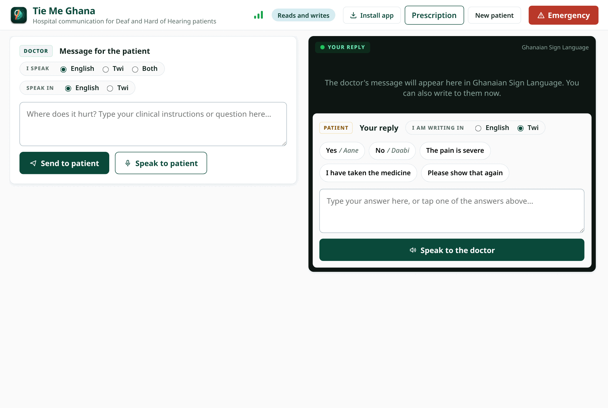
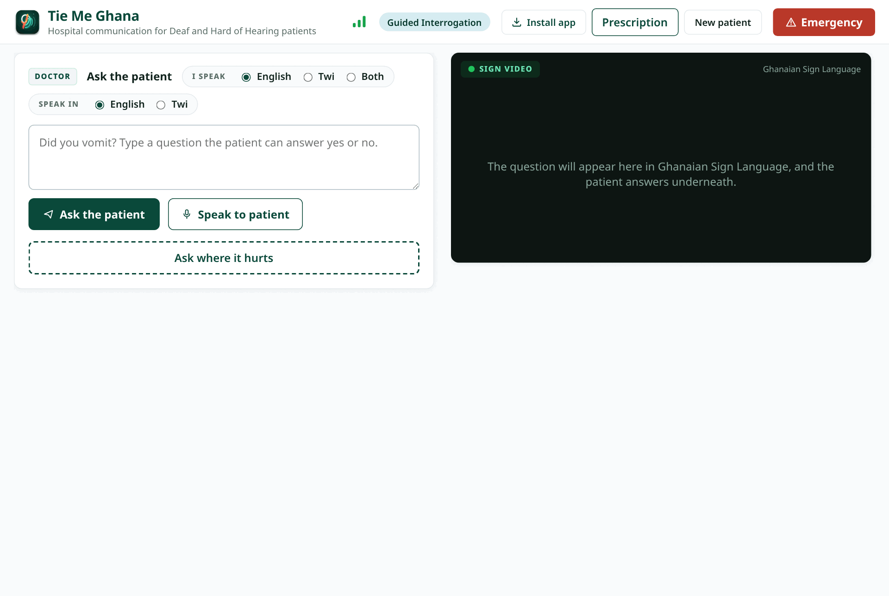
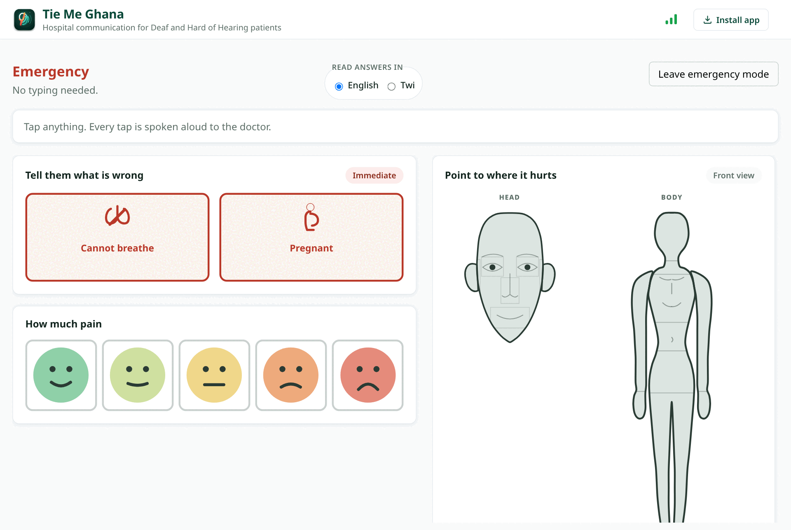
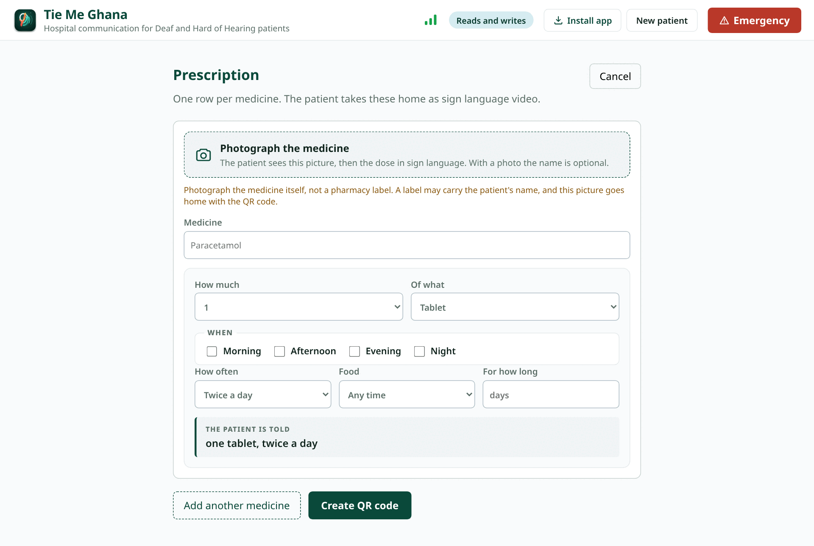

User Manual
Hospital communication for Deaf and Hard of Hearing patients, in Ghanaian Sign Language.
This app is not an interpreter and does not replace one. Where a qualified Ghanaian Sign Language interpreter is available and the conversation matters, use the interpreter.
This is a pilot. It has not been approved as a medical device and is not cleared for clinical use. Do not use it alone to take consent for a procedure, to deliver a serious diagnosis, or for any exchange where a misunderstanding carries real risk.
Tie Me Ghana helps a clinician and a Deaf or Hard of Hearing patient understand one another during a hospital visit, without an interpreter in the room.
You type or speak. The patient sees your words as a video of a real person signing in Ghanaian Sign Language. They answer by tapping, typing or pointing, and their answer is read aloud to you so you can keep your hands and eyes on the patient.
Every sign is a recording of a real person, approved in advance by a fluent Ghanaian Sign Language consultant. The app never invents or animates a sign, so it can only show what has been filmed and approved.
The app refuses rather than guesses. When a word has no approved sign, it tells you instead of showing a different one. A near miss in a clinical sentence is more dangerous than a gap, because it looks like an answer.
Some sentences will be refused outright and will not be shown to the patient. When that happens, rephrase the sentence or find another way to ask.
Section 1
This is what the app opens into, and what the next patient should always be handed. One question decides how the whole visit will work.

1 2 3 4 5 6| 1 | Emergency | Opens Emergency mode straight away, without asking anything first. Use it for a patient who arrives after an accident or who cannot breathe. It works before you have asked whether they read. |
| 2 | Install app | Adds Tie Me Ghana to the device like any other app, with its own icon. Worth doing once on every device that will be used in the clinic: an installed copy opens faster and keeps its saved sign videos. |
| 3 | Connection | Green means the hospital system is reachable. If it turns grey the app keeps working with the sign videos already on the device, but new prescriptions cannot be issued until it returns. |
| 4 | Yes | The patient reads written language. Tapping this opens the full consultation screen, where you type freely and they can type back. |
| 5 | No | The patient does not read print. Tapping this opens Guided Interrogation, where every question is asked in sign video and answered yes or no. |
| 6 | Privacy and Terms | The full privacy policy and terms of use. Worth reading once before the app is used with real patients, and the page to send a hospital that asks what the app stores. |
Section 2
For a patient who reads. You type, they see both the words and the sign video, and they can type back.

1 2 3 4 5 6| 1 | I speak | The language you are about to use. Choose Both when your sentence mixes English and Twi, which is normal for medicine names that have no Twi word. Speaking aloud needs one language chosen, because speech recognition handles one at a time. |
| 2 | Speak in | The language the patient's answers are read aloud to you in. Set it once at the start of the visit to whichever language you understand. |
| 3 | The message box | Type what you want to say. Keep it to one clear instruction or question at a time. The app will show you the sign video before the patient sees it. |
| 4 | Send to patient | Renders your message as Ghanaian Sign Language and shows it to the patient. If a word has no approved sign, the app tells you instead of guessing. |
| 5 | Speak to patient | Dictate instead of typing. Tap once to start, tap again to stop and send. Typing always works and needs no permission, so use it whenever the room is noisy. |
| 6 | New patient | Ends this visit and erases the record of it from the device. Tap it before handing the device to the next patient. This is the control that stops one patient seeing another patient's consultation. |
Section 3
For a patient who does not read print. Every question is asked in sign video and answered with a tap, so nothing depends on written language.

1 2 3| 1 | The question | Ask one thing at a time. Guided Interrogation is for a patient who does not read, so every question becomes a sign video and is answered yes or no. |
| 2 | Send to patient | Shows the question as sign video. When the video ends, the Yes and No answers appear in the same place, so the patient does not have to look elsewhere. |
| 3 | Ask where it hurts | Asks the question and then offers the patient a set of body locations to choose from, instead of a yes or no answer. |
Section 4
For an accident, a collapse, or any moment where there is no time to set anything up. Nothing here needs typing, reading, or a sign video that has been filmed.

1 2 3 4 5| 1 | Read answers in | The language every tap is read aloud in. Set it first, in the few seconds before you start, so what the patient says reaches you in a language you understand. |
| 2 | Critical alerts | One tap says the most urgent things a patient may need to tell you. Each is spoken aloud immediately. Where the sign video has not been filmed yet, the icon and the label are still shown and still work. |
| 3 | How much pain | Five faces, from comfortable to severe. The patient taps one and it is spoken aloud. This needs no sign video and no reading at all. |
| 4 | Point to where it hurts | The patient taps a part of the head or body and it is spoken aloud. Only the part they touched is highlighted, so there is no doubt about what they meant. |
| 5 | Leave emergency mode | Returns to the normal consultation. Emergency mode sits outside the visit, so leaving it does not lose anything you had already asked. |
Section 5
The instructions the patient takes home, as a QR code they can replay in sign language on their own phone for as long as the course lasts.

1 2 3 4| 1 | Photograph of the medicine | Take a picture of the packet. The patient recognises the box far more reliably than the name, and it means you do not have to type a drug name at all. Photograph the medicine, never the patient and never a label carrying a name. |
| 2 | How much | Half, one, two, and so on, with the unit beside it. These are chosen rather than typed so that every prescription the app can produce is one it can also sign. |
| 3 | When | Morning, afternoon, evening, night, and whether it is taken before, with or after food. Choosing specific times is clearer for the patient than a count such as twice a day. |
| 4 | Issue the prescription | Produces the QR code the patient takes home. Scanning it replays the whole list in sign language, on their own phone, with no account and no app to install. |
Section 6
Hospital connections drop. The app is built for that, and most of it keeps working.
| What you are doing | With no connection |
|---|---|
| Asking a question the device has already shown | Works. The sign video is saved on the device. |
| Asking something new | Needs a connection to look up the signs. |
| Emergency mode: pain scale and body map | Works. Both are drawings and need nothing from the server. |
| Reading an answer aloud | Needs a connection. |
| Issuing a prescription | Needs a connection. |
| A patient replaying a prescription at home | Works once they have opened it once on a connection. |
Green means the hospital system is reachable. Grey means it is not. The app does not stop when it turns grey: it keeps using what is already on the device and tells you which actions are unavailable rather than failing silently.
On the day of a demonstration or a clinic session, open the app a minute beforehand. The pilot runs on free hosting that puts the server to sleep after about fifteen minutes of no use, and waking it takes up to a minute.
Section 7
The short version. The full privacy policy is linked at the bottom of the opening screen.
| Information | Where it goes |
|---|---|
| The patient's name, age, number or diagnosis | Never collected. There is nowhere in the app to enter them. |
| The record of the visit | The device only. It is never sent anywhere, and it is erased when you tap New patient. |
| Prescriptions | Stored on the server as medicine names, photographs and dosages, with nothing saying whose they are. |
| Photographs of medicines | Stored with the hidden camera information removed, including the location the photograph was taken. |
Two habits that matter.
Tap New patient before handing the device on. That is what erases the previous consultation, and these consultations cover pregnancy, sexually transmitted infections and HIV status.
Photograph the medicine, never the patient, and never a label carrying somebody's name.
Sentences are sent to GhanaNLP's Khaya service to be turned into Twi and read aloud, and a dictated message is sent as audio to be turned into text. Nothing identifying goes with them, because the app holds nothing to send. The record of the visit is not among them: it is assembled on the device and stays there.
It is worth telling a patient that a translation service is involved, in the same way you would mention an interpreter.
Anybody who scans the code or holds the link can see that list of medicines. It carries no name, so it says what somebody is taking without saying who, but treat a printed code the way you would treat any prescription slip.
Section 8
The problems most likely to come up, and what to do about each.
| What you see | What it means, and what to do |
|---|---|
| The app says a word has no sign | That sign has not been filmed and approved yet. Rephrase using simpler words, or write the word down if the patient reads. |
| A question is refused and will not send | The sentence contains something that cannot be signed safely. The app will not show a half correct clinical sentence. Rephrase it. |
| The video area says it is getting ready | The sign video is still downloading. It plays as soon as it arrives. If this happens often, open the app on a better connection once and let it finish setting up. |
| The connection indicator is grey | The hospital system is unreachable. Saved sign videos, the pain scale and the body map still work. New questions and prescriptions do not. |
| The microphone will not start | Either the browser refused permission, or Both is selected as your language. Speech recognition handles one language at a time, so choose English or Twi, or type the message. |
| The first request after a quiet period is slow | The pilot server sleeps when unused and takes up to a minute to wake. Open the app a minute before a clinic session. |
| The Twi caption reads oddly | Translation is done by machine, by GhanaNLP's Khaya service. It has no knowledge of the patient or of what was said a moment earlier, so a clinical sentence can come back subtly wrong. Read it before you send it if you read Twi, and rephrase in simpler words if it looks off. |
| Nothing is captioned and answers are not read aloud | The translation service is unreachable. The app says so and asks you to type instead. Sign videos already on the device still play. |
Write to bestdrtrick@gmail.com. Include what you were doing, what you expected, and what happened instead. If it concerns a prescription, include its reference, which is the code under the QR image.